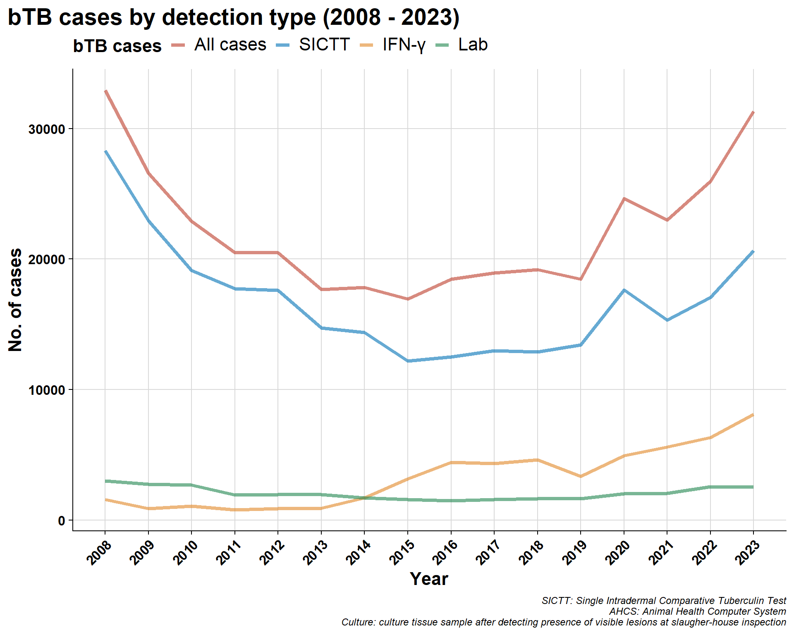
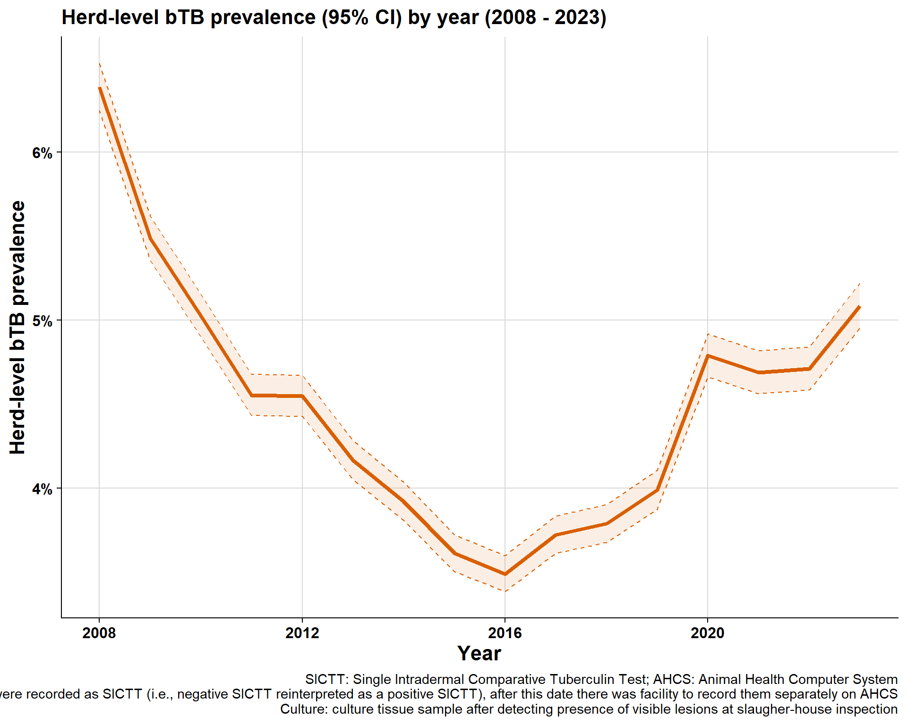

3 bTB case numbers and herd-prevalence by different herd-types
\(~\) \(~\)
3.1 Cases over time
3.1.1 by year:
3.1.2 by month:
\(~\) \(~\)
\(~\) \(~\)
3.2 Proportion of cases by herd-type
3.2.1 AHCS
3.2.2 Brock et al. herd-types
3.2.3 Brock et al. herd-types (sub-groups)
\(~\) \(~\)
\(~\) \(~\)
3.3 Herd-level bTB prevalence
3.3.1 Overall prevalence

3.3.2 Brock et al. herd type prevalence
3.3.3 Brock et al. herd type prevalence by county
3.3.4 Brock et al. herd type sub-classes prevalence
\(~\) \(~\)
\(~\) \(~\)